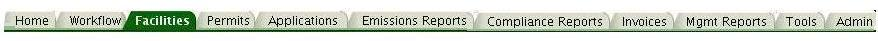

Previous Topic
Next Topic
| Common User Interface Elements |
Previous Topic |
Next Topic |
This page describes the common layout of the web pages in this system, including the menus and cues that control how you move about within the system. Every page in the system is laid out like the page presented here, so once you become familiar with this navigation strategy, you will be able to work in the system with very little difficulty.
The figure below illustrates this layout
and the sections that follow describe each of the numbered items on the screen.
This topic contains the following sections which correspond to the numerical markers in the figure above:
The screen layout described here applies to all the content screens for this sytem; that is, the screens the provide information and access to operations for you to perform.
At the top of each screen you see a header or banner that consists of three parts: the Ohio EPA logo, a welcome message, and three navigation links that provide short-cuts to locations you may want to reach easily. The screen header looks like this:
Screen Header (also referred to as "banner")
This header appears in addition to any header or banner that is provided by the e-Business Center through which you may have accessed the system. Note that the first hyperlink in the header, epaPortal, is a link to the login page of that portal, which provides you easy access to EPA applications and services outside of AQD.
The second link in the header, Help, takes you to specialized, page-specific information that provides you with help for whatever page you access it from, including all the operations available on that page. So, for instance, if you click Helpfrom the Facilities --> Facility Detail page, a pop-up window will give you information about that page, including the meaning of the information you see on that page, and the activities and operations you can perform from that page.
Clicking the final header link, Logout, which is available on every page in the system, logs you out of the IMPACT System and returns you to the location from which you entered the system. You should always Logout of the system when you complete your work for that session. (Be sure to save what you're working on so that it will be available to you when you come back to the system at a later time.)
Just below the page header, you will find a series of tabs that go across the screen. These tabs are also referred to as the first-level menu. The tabs, which look like the tabs you would ordinarily see in a notebook, give you access to the different sub-systems that provide the functionality that the system delivers to you through this web application. You may not see all of the tabs on your screen when you login to the system. You will only see the tabs that provide access to operations you are allowed to execute, based on your system role. The tabs look like this:
The highlighted tab is the tab that you selected, or that the system has moved you to as a result of something you selected in another menu or a link you clicked on in a data table.
Back to TopYou will find the second-level menu immediately below the first-level menu tabs on each screen.
This menu shows you the operations that you have available under the selected tab. The second-level
menu choices are different under each tab. The figures below illustrate the second-level menus
for two different tabs. Only the menu items applicable to the choices currently selected on the screen are visible.
Second-level Menu Choices for the Facilities Tab
Similarly, the second-level menu items that appear when the Workflow tab is selected are shown below:
Second-level Menu Choices for the Workflow Tab
As on the Facilities second-level menu illustrated above, there is a menu item highlighted (Workflow Search), another available, but not highlighted (Summary Charts) and two choices that are not available, since they apply only when you have selected a single workflow (in the case of Workflow Diagram) or workflow task (in the case of Task Profile)
Back to TopThird-level menu items, if applicable for any particular screen, appear as a bullet list in a panel at the left of the screen. Each bullet item represents an operation or set of information that may be available, depending upon your previous selections and/or your system role. The operations that are listed depend on which tab is selected.
An example of a third-level menu, in this case for the Permits tab is illustrated below.
Third-level Menu Choices for the Permits Tab
In addition, only the operations that apply to the specific object for which you have chosen to view detail data are available and selectable; that is, only those operations that are underlined in the third-level menu are active hyperlinks. For example above, in the figure above, the Denial Issuance link is only active if the permit being viewed has been denied; Fee Summary is only available if the referenced permit has been issued and invoiced.
The system provides access to a lot of information and many automated as well as tracking
operations for your use. As a result,
you may have to use the scroll bars at the right and on the bottom of the screens in order to
access all the information and operation buttons that the system presents. on a particular screen.
For convenience, the
system provides short-cuts in the footer at the bottom of the screen to each tab (first-level menu item)
and to each of the hyperlinks that appear in the screen header. This saves you from having
to scroll back up to the top of the screen in order to access those menus and links. The figure
below illustrates the common footer.
Common Footer Hyperlinks
In this figure, you can tell that this
footer was taken from a screen under the Permits tab
because the Permits link is highlighted .
Breadcrumbs are a common mechanism for web pages to show you what selections you made in previous menus in order to reach the page you are currently viewing. In this system, the breadcrumbs appear below the second-level menu and to the right of the third-level menu. In the example shown below, the first level menu choice, Facilities, and the second-level menu choice, Facility Detail are highlighted in the appropriate menus as well as shown as a navigation path in the breadcrumbs. The third-level menu choice, Emission Units, which is also highlighted in the menu, appears as the title for the information page.
Breadcrumbs for the Navigation Path Facilities --> Facility Detail --> Emission Units
The content area of the screen is everything you see between the page title shown in the above figure and the hyperlinks in the footer described above, whether or not there is a third-level menu visible on the page you are currently viewing. This area of the screen presents the available information about the entity you have selected. In some cases, there are multiple screens associated with the entity. The first screen you see is the highest level, or most general, data for your selection. The content area of the screen is described in detail in the Detail Data help topic.